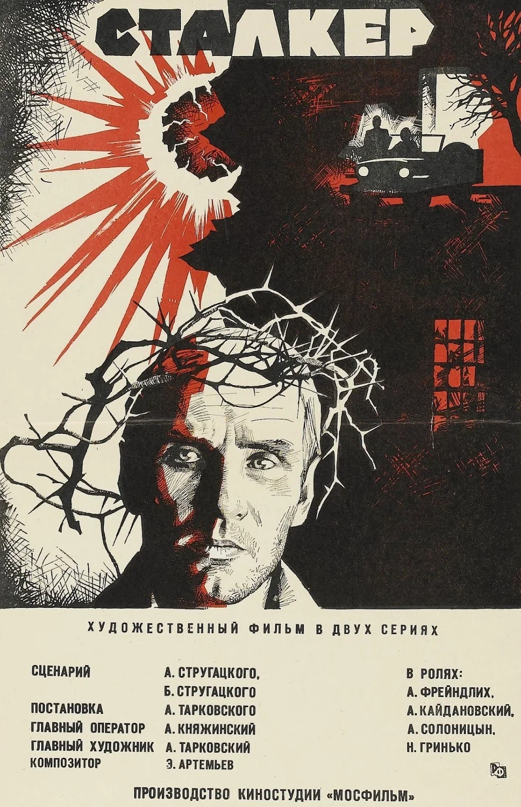
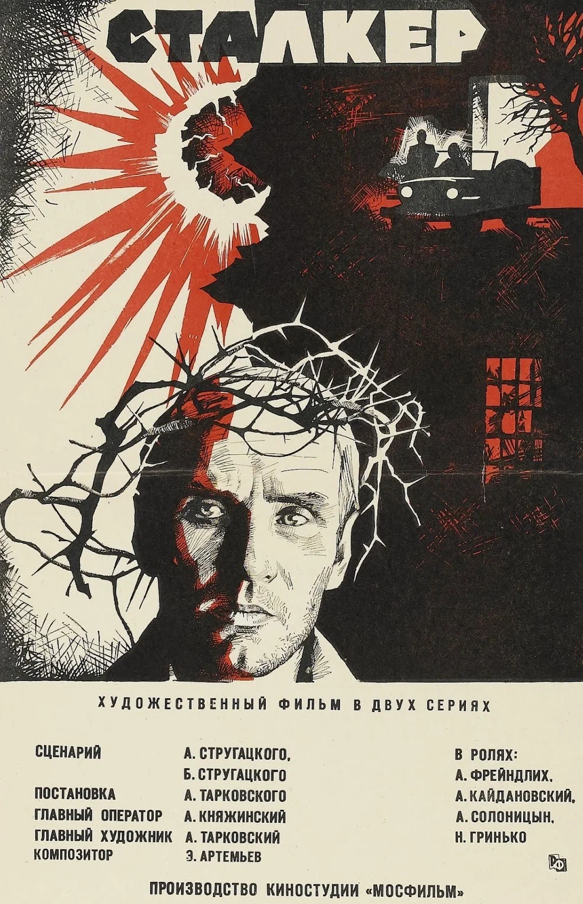

Бывший морпех Джейк Салли прикован к инвалидному креслу. Несмотря на немощное тело,
Джейк в душе по-прежнему остается воином. Он получает задание совершить путешествие
в несколько световых лет к базе землян на планете Пандора, где корпорации добывают
редкий минерал, имеющий огромное значение для выхода Земли из энергетического кризиса.

Оставшиеся в живых члены команды Мстителей и их союзники должны разработать новый план,
который поможет противостоять разрушительным действиям могущественного титана Таноса.
После наиболее масштабной и трагической битвы в истории они не могут допустить ошибку.
После принятия образа аватара солдат Джейк Салли становится предводителем народа на'ви
и берет на себя миссию по защите новых друзей от корыстных бизнесменов с Земли.
Теперь ему есть за кого бороться — с Джейком его прекрасная возлюбленная Нейтири.
Когда на Пандору возвращаются до зубов вооруженные земляне, Джейк готов дать им отпор.